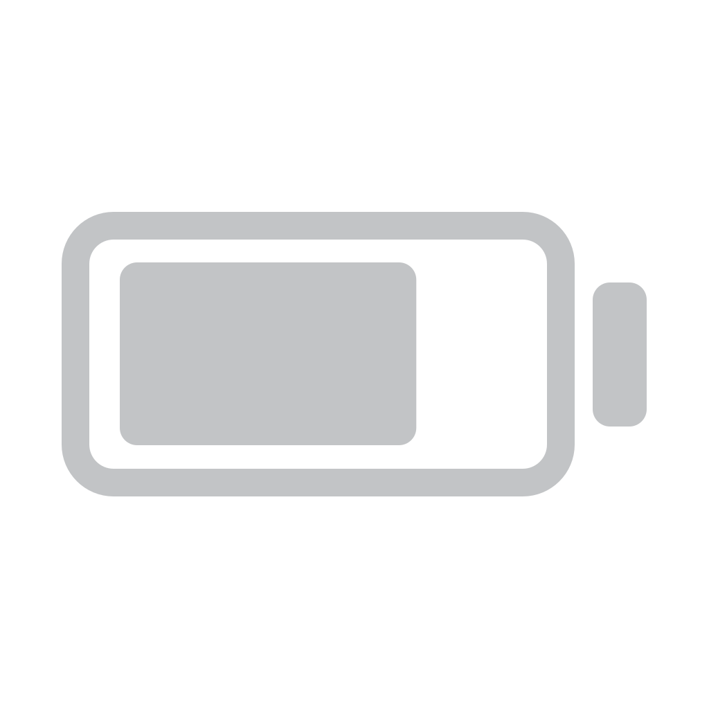
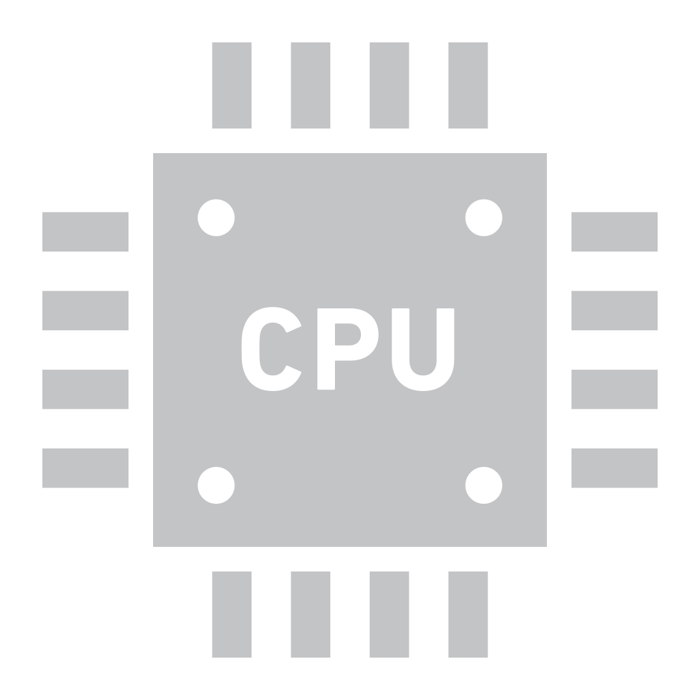
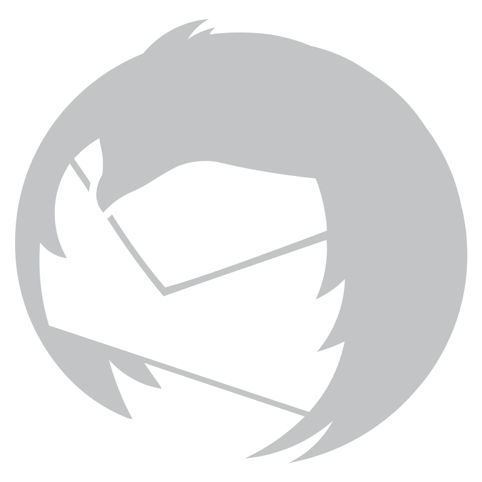
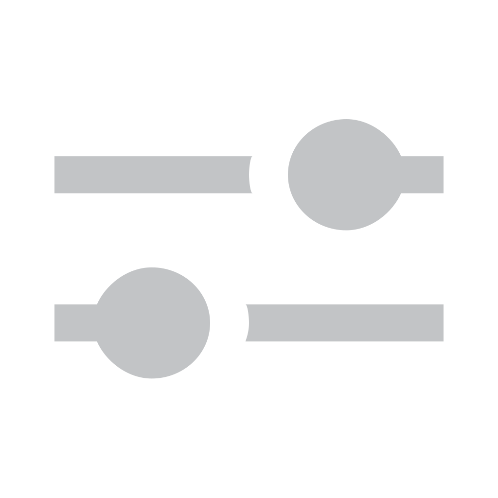
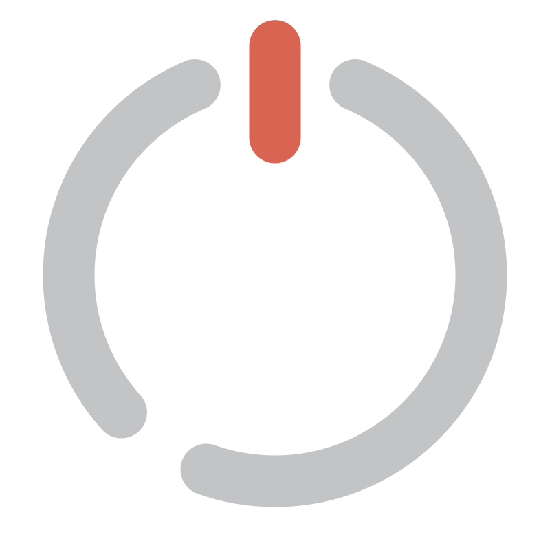
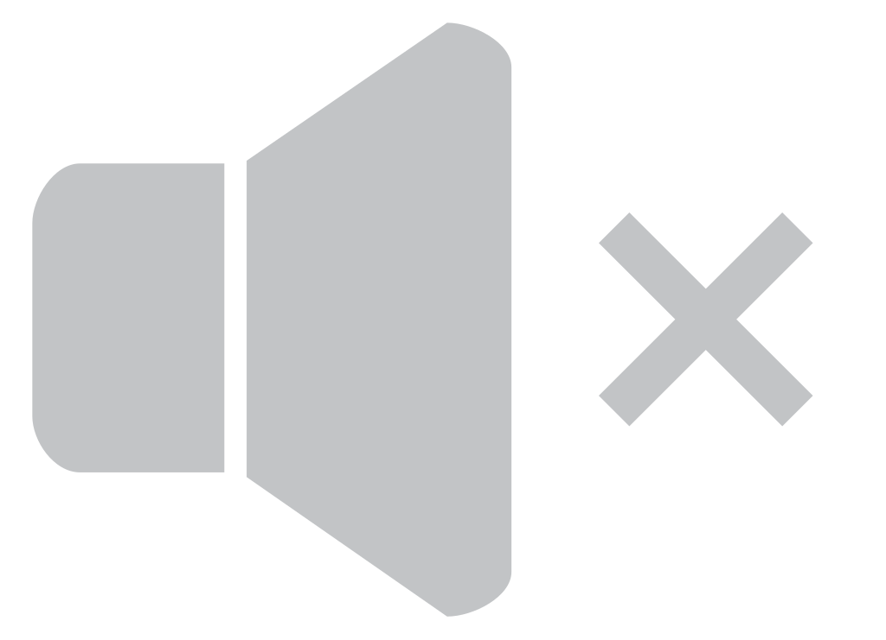
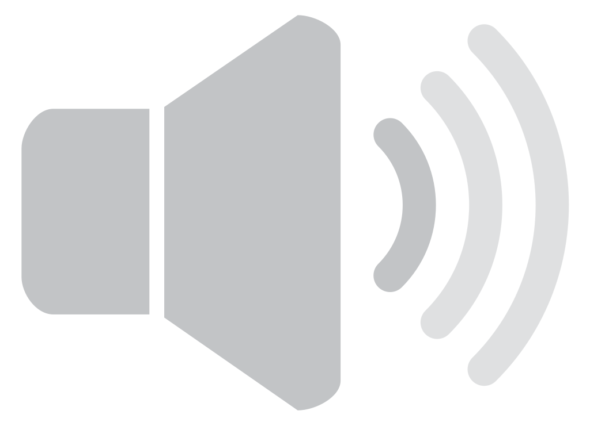
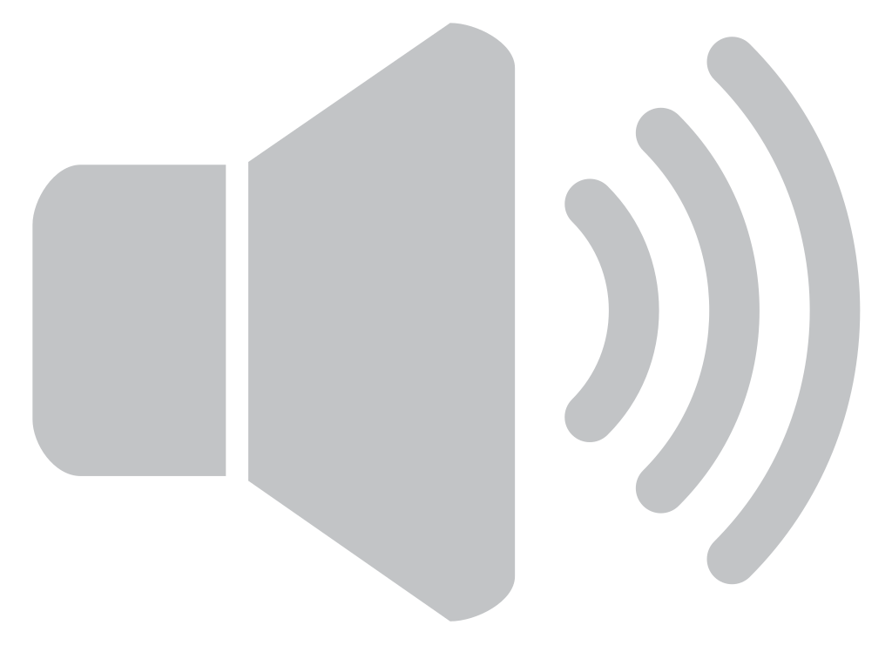
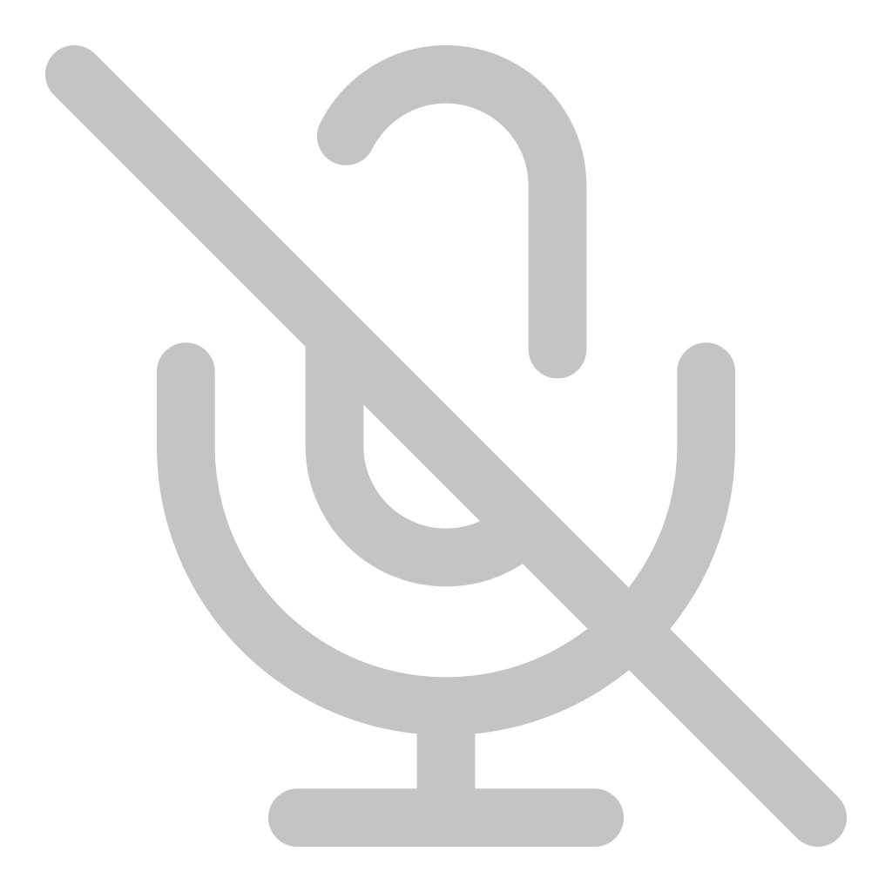

1234
Wed 18 Sep 22:41
 72%
72%






volume-*, microphone-*) resolved through IconRegistry exactly as the bar does — no hand-drawn glyphs. Output glyph is level-aware; mic sits beside it.
72%





72%
volume, microphone), so on a light wallpaper the runtime retargets their foreground token to a darker palette slot before ITR renders. The mock approximates that retarget with a brightness filter; the real path is a re-render, not a CSS filter.



volume icon group and the settings-panel Sound card share these thresholds — one vocabulary, two surfaces.
microphone group: mic-on and mic-off, both rendered by ITR. The green live dot (the one literal signal colour the spec allows, like the recording dot) appears when any wp.recorders stream is active. Mic left-click opens the popup's Input section.